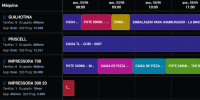
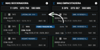

PCP
Mais retrabalho para reprogramar.
Sequenciamento da produção
Organize sua fila de produção, visualize a capacidade das máquinas e programe com mais segurança usando a MESTTI.
Pare de depender apenas de planilhas, apontamentos atrasados e decisões no escuro para definir o que entra primeiro na produção.

Isso soa familiar?
Em muitas indústrias, o PCP precisa tomar decisões importantes sem ter uma visão clara da capacidade real da fábrica.
O problema não é falta de esforço. É falta de visibilidade.
Quem sente na prática
Quando a produção é programada sem uma visão clara da capacidade, os problemas começam pequenos e terminam caros.
Mais retrabalho para reprogramar.
Mais troca de prioridade e perda de ritmo.
Mais risco de atraso para o cliente.
Menos confiança para tomar decisão.
Desperdício de capacidade produtiva.
O atraso raramente começa na expedição. Ele começa quando a fábrica programa sem visibilidade.
O que muda na prática
O módulo de Sequenciamento e Programação da MESTTI ajuda sua indústria a visualizar ordens, máquinas, filas e prioridades em um quadro claro e prático.
Assim, o PCP consegue planejar melhor, a produção entende melhor a sequência e a gestão acompanha com mais segurança o que está acontecendo.
Quero ver minha programação com mais clarezaVisão do sistema
Acompanhe a distribuição das ordens, a ocupação das máquinas e os pontos de atenção da produção em um quadro visual simples de entender.

Para quem é
Essa solução faz sentido para sua empresa se hoje você:
Se sua fábrica já produz, mas ainda tem dificuldade para enxergar e organizar a fila, a MESTTI pode ajudar.
Como funciona
Mapeamos como sua indústria programa ordens, máquinas, prioridades e prazos.
As ordens passam a ser visualizadas em um quadro claro, com filas, horários e máquinas.
O PCP e a gestão conseguem tomar decisões com mais clareza, reduzindo improvisos.
A fábrica passa a enxergar melhor capacidade, gargalos e riscos de atraso.
Ainda com dúvida?
A MESTTI foi criada para indústrias que querem evoluir a gestão da produção de forma simples, prática e acessível.
Não é sobre trocar tudo de uma vez. É sobre começar a enxergar melhor.
Sim. A planilha pode ajudar no começo, mas ela não mostra a operação com clareza visual e não acompanha a rotina da produção com a mesma praticidade.
A MESTTI é feita para ser simples, objetiva e próxima da realidade industrial. A ideia é facilitar a rotina, não complicar.
A proposta da MESTTI é ter uma implantação prática e não invasiva, respeitando a operação da indústria.
Não. Pequenas e médias indústrias também precisam de dados claros para produzir melhor, reduzir perdas e cumprir prazos com mais segurança.
Próximo passo
Preencha o formulário e vamos conversar sobre a realidade da sua produção.
Vamos analisar como sua indústria organiza a fila hoje, onde estão os principais gargalos e como a MESTTI pode ajudar a trazer mais clareza para o PCP e para a gestão.
Separe uma fila real de ordens, as máquinas disponíveis, os turnos e os tempos de processo utilizados pelo PCP ou PPCP. Na demonstração, confira como a programação por máquina representa sua sequência e como a equipe revisa prioridades diante de um atraso.

A MESTTI apresenta filas, prioridades e programação visual. Isso não comprova, por si só, otimização automática de capacidade finita ou reprogramação autônoma após uma falha. Se essas regras são obrigatórias para a sua operação, leve-as para a avaliação e confirme o escopo na proposta.
Uma previsão precisa ser confrontada com o andamento real. Conheça o monitoramento e apontamento de produção para entender a origem das informações utilizadas pela equipe. Integrações com ERP e cadastros existentes precisam ser avaliadas caso a caso.
Compare os papéis de MES, PCP e APS ou solicite uma demonstração com uma ordem da sua fábrica.